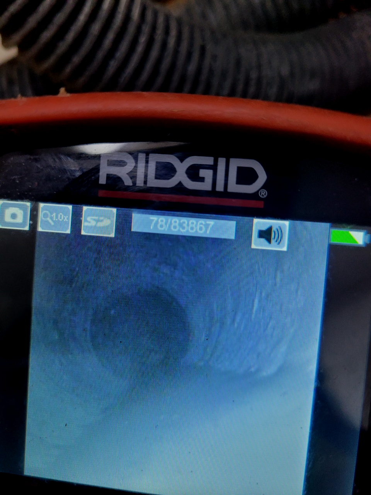
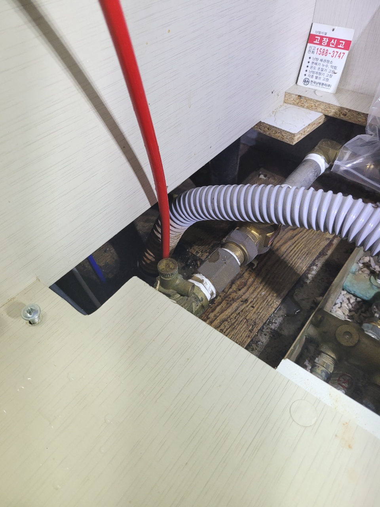
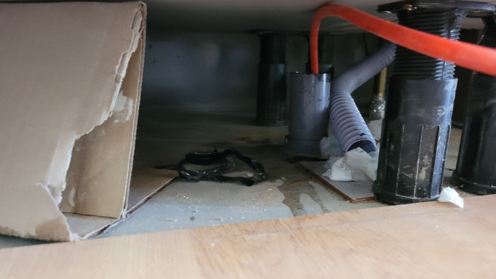
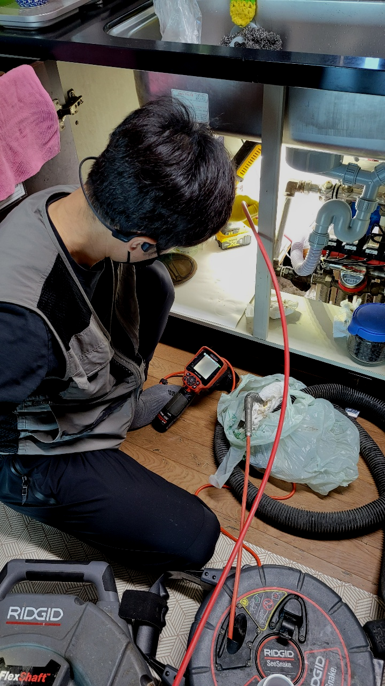
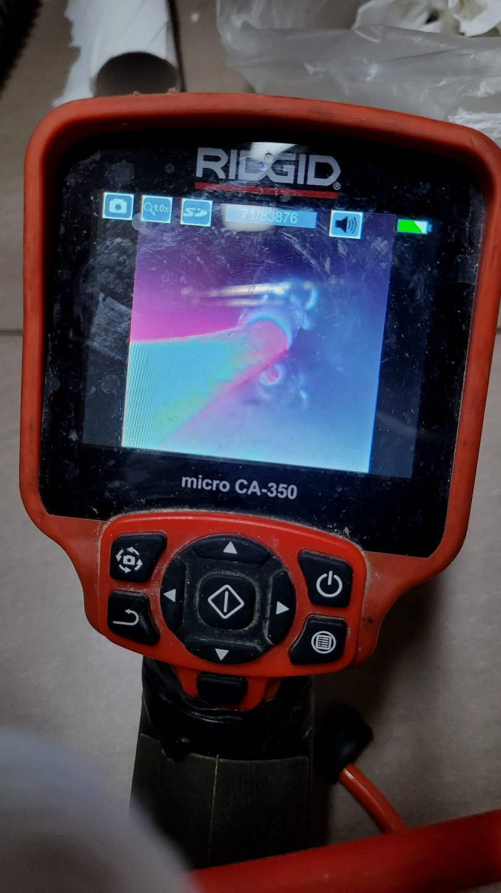
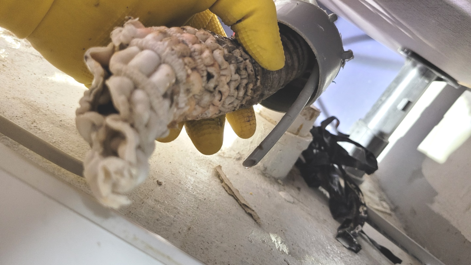

🏠 수원 오목천동씽크대막힘 뚫음 고색동 평동 배관기름때 제거하는 방법
수원 고색동 싱크대막힘 전문 시공 후기

📋 작업 개요
- 위치: 수원 고색동, 고색동, 수원
- 서비스 유형: 싱크대막힘, 변기막힘, 하수구막힘, 배관막힘, 누수수리, 역류해결, 뚫는업체, 배관청소, 고압세척, 설비공사
- 작업 일시: 2023. 10. 12. 11:36
- 업체명: 하수구수사대 (010-5615-2118)
🔍 문제 상황
어서오세요
설비전문업체 "하수구수사대"를 찾아주셔서 감사드려요^^
생활하는데에 없으면 안되는것이 물과 배출구인데요, 우리집을 포함해서 상가등등배출구가 막히게 되면 여간 답답하지 않을수 없습니다.
일상에서 이용하는거와 달리 하수도 물들이 원활하게 빠져나가지 못해도 변함없이 낳좋아질수 있어서 이 시간부터 집중해주시길 바랍니다.
수원 오목천동씽크대막힘 뚫음 고색동 평동 배관기름때 제거하는 방법

🔎 원인 분석
💡 전문가 진단: 수원 오목천동씽크대막힘 뚫음 고색동 평동 배관기름때 제거하는 방법
하수 막힘의 문제를 해결하는 데 있어서 눈에 보이지 않는 막힘의 원인을 찾는 것은 중요하고 필요한 방법이라고 할 수 있습니다. 배관의 내부를 처음부터 끝까지 배관 내시경을 통해서 꼼꼼하게 확인을 하는 작업을 하였습니다.
수시로 막히는 배수배관과는 다르게 스케일링 작업을 하면서 배수막힘에 대한 해결을 할 수 있는 것입니다. 배관 스케일링 작업을 하기 위해서 장비들을 세팅을 먼저 샤프트기를 투입하였는데요. 샤프트기는 배관의 커다란 이물질들을 분쇄한 후에 잘게 부수어서 배출을 할 수 있도록 하는 장비입니다.
막힘 증상은 느닷없이 발생된 것은 아니고 막힘의 전조증상이 보이면서 심각한 퇴수막힘으로 전환이 되는 것입니다. 의뢰인께서 퇴수막힘을 인식 못하셔서 줄곧 이용을 하다가 오물 덩어리가 배관으로 흘러 들어가 쌓이면서 심한 막힘이 나타나는겁니다.
내시경을 내려보니 배출관막힘이 일어난 이유는 기름들이 가득 쌓이면서 물이 내려가기 어려운 통로 상태였는데요. 이러한 기름 슬러지들을 제거하기 위해서 배관에 플렉스 샤프트라는 장비를 사용해서 스케일링 작업을 진행하게 되었습니다.
배관을 직접 확인한 후에는 본격적으로 배수배관 내부에 있는 이물질들과 벽에 있는 덩어리들을 제거를 하기 위해서 배수 전체적으로 고압세척 과정을 진행하기로 하였습니다. 고압세척은 강한 수압으로 배관 내의 이물질들을 제거하기 때문에 사용 시에 배관의 두께나 내부 길이 등을 고려해서 작업을 해야 합니다.

🔧 작업 과정
퇴수구 바깥쪽으로 한번 더 이물질을 걸러주는 거름망이 사라졌기에, 다른 물체가 흘러내려가 원인이 되었을 수도 있겠다 싶기도 하였습니다. 일단 어느 곳이 퇴수구막힌 부분인지 확인하였으니, 카메라를 꺼낸 뒤 석션기를 넣어 흡입을 시작하였습니다.
고객님께서는 사흘 전부터 하수관물이 잘 안 빠지면서 이상 징후가 있었다고 하셨는데요. 며칠 전부터 화장실에서 하수구 냄새가 올라오더니 갑자기 역류를 하면서 배수가 전혀 이뤄지지 않게 되었다고 하였습니다.
스케일링은 막혀버린것도 해결해주지만 심한냄새도 없애주는데요.괜스레배수관을 수리한다고 만지시면 큰공사까지 할수있어서 배수관에대해 지식이많은 배수관배관업체에 연락하는게좋아요
안쪽에위치한 기름때들을 강력한압력으로 청소하는 석션기가있고 기계의헤드에 붙어있는 360도로회전하는체인으로 배출구 이물질을제거할수있는 스케일링기계도 갖춰져있습니다
전문가로서 하수구와관련된 대부분을하기에 각종퇴수구 물샘증상을 발견하셨다면 문의를넣어주시면 천천히듣고 빨리가드리고 문제를없애드리겠습니다
가지고있는 배출구전문장비에관해서도 지나칠수없죠.배관청소를 진행할때는 기본적인 기계를써서 짧은시간안에 처리할수있습니다.저희업체는 어떤현장을가도 배관cctv로안을 본다음 육안으로 확인이안됐던부분까지 처리해드리고있습니다.
처음에는 고깃기름처럼 투명하다가 굳어지고 그러다 보면 다른 이물질이랑도 금방 뭉치면서 덩치가 커져 좁은 퇴수구배관에 꽉 끼는데요. 이게 점점 딱딱해지면서 시간이 지나면 유독 그 부분만 빵빵하게 보일 만큼 돌이 배관 안에 끼인 것처럼 보이게 됩니다.
그래서 전문설비업체의 도움이 꼭 필요한 것입니다. 확실하지 않은 이유와 장비로 뚫으려고 한다면 상황은 더 악화되며 배관막힘이 심해지고 해결이 된다는 보장도 없지만 처음부터 전문 장비의 도움을 받으며 작업하게 되면 빠른 뚫음은 물론이거니와 막힌 변기도 바로 시원하게 사용이 가능해질 테지요.


✅ 작업 완료
얼마 전에 갔던 원룸 건물도 싱크대 배수 문제가 생겼지만 지나치셨다가 누수까지 발생하여 바닥재에 영향을 끼치고 밑에 집에도 피해가 가버린 곳이었습니다. 이런 사례도 있기에 내려벼 두시기보다는 별것 아닌 것 같아도 전문 기사와 이야기해 보시는 것이 올바르다고 말씀드립니다.
토요일과 일요일을 가리지 않으며 찾아가도록 하겠습니다. 진또배기 경력자를 알아보고 계신다면 망설이지 마시고 연락하셔서배관 배관 청소 시원하게 받아보시길 바랍니다.
#하수구막힘 #하수구뚫음 #하수구역류 #씽크대막힘 #싱크대역류 #오수관막힘 #하수구청소 #욕실하수구막힘 #변기막힘 #하수구뚫는비용 #싱크대수리 #화장실막힘




⚠️ 베란다 누수 및 방수 관리 방법
- ✅ 비가 많이 올 때 창틀 주변이나 아래층 천장에 얼룩이 생기는지 정기적으로 확인해 보세요.
- ✅ 우수관 주변 실리콘 마감이 들뜨거나 깨진 틈새가 있는지 손상 여부를 수시로 체크하세요.
- ✅ 베란다 바닥 타일의 줄눈(메지)이 소실되면 그 틈으로 물이 침투하여 누수가 유발됩니다.
- ✅ 누수 의심 증상 발견 시 방치하면 아래층 손실이 커지므로 즉시 전문가의 진단을 받으십시오.
💡 핵심 정리
- 확실한 장비 작업(내시경 점검 및 샤프트 스케일링)으로 원인을 뿌리 뽑습니다.
- 작업 후 1년 이내에 동일한 부위 재발 시 100% 무상 A/S 서비스를 보장합니다.
- 서울 · 경기 · 인천 전 지역에 24시간 언제든 긴급 출동할 수 있도록 항시 대기 중입니다.
❓ 자주 묻는 질문 (FAQ)
🚨 수원 고색동 싱크대막힘 문제로 고민이신가요?
정확한 원인 진단과 확실한 시공으로 재발 없는 해결을 약속드립니다.
24시간 긴급 출동 | 서울 · 경기 · 인천 전지역 | 1년 내 재발 시 무상 A/S